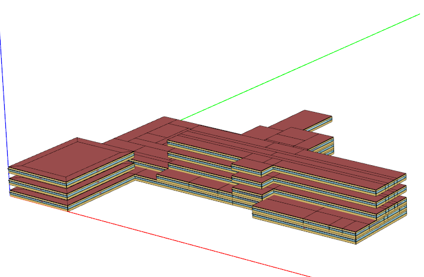

This vignette introduces the IdfGeometry and IdfViewer classes. IdfGeometry is designed to extract data for all geometry objects and perform geometric operations on them, while IdfViewer is to view IDF geoemtry in 3D using the rgl package in a similar way as OpenStudio SketchUp Plugin.
All geometry data in an Idf object can be extracted using the Idf$geometry(). What it returns is an IdfGeometry which parses all geometry related objects, including:
GlobalGeometryRulesBuildingZoneThermal Zones and Surfaces group and Daylighting group
path_idf <- file.path(eplus_config(8.8)$dir, "ExampleFiles/HospitalLowEnergy.idf")
idf <- read_idf(path_idf)
#> IDD v8.8.0 has not been parsed before.
#> Try to locate 'Energy+.idd' in EnergyPlus v8.8.0 installation folder '/usr/local/EnergyPlus-8-8-0'.
#> IDD file found: '/usr/local/EnergyPlus-8-8-0/Energy+.idd'.
#> Start parsing...
#> Parsing completed.
geom <- idf$geometry()
geom
#> ── EnergPlus IDF Geometry ──────────────────────────────────────────────────────
#> * Path: '/usr/local/EnergyPlus-8-8-0/ExampleFiles/HospitalLowEnergy.idf'
#> * Version: '8.8.0'
#> * Building: 'Large Hospital TSD Low-Energy Model'
#> * North Axis: 0°
#> * Zone Num: 130
#> * Surface Num: 795
#> * SubSurface Num: 125
#> * Shading Num: 25
#> * Dayl Ref Pnt Num: 48
#> * Coordinate System:
#> - Detailed: 'Relative'
#> - Simple: 'Relative'
#> - Daylighting: 'Relative'
geom$rules()
#> $starting_vertex_position
#> [1] "upperleftcorner"
#>
#> $vertex_entry_direction
#> [1] "counterclockwise"
#>
#> $coordinate_system
#> [1] "relative"
#>
#> $daylighting_reference_point_coordinate_system
#> [1] "relative"
#>
#> $rectangular_surface_coordinate_system
#> [1] "relative"
geom$area()
#> id name
#> 1: 154 Floor 1 Cafe Slab
#> 2: 155 25C85A
#> 3: 156 22EE43
#> 4: 157 FCF93A
#> 5: 158 D30CFB
#> ---
#> 941: 4732 Floor 7 Patient 1 Ext Wall 1:shading_south_1
#> 942: 4856 Floor 7 Patient 4 Ext Wall 2:shading_south_1
#> 943: 5143 MOB Floor 1 Perimeter 2 Ext Wall:shading_south_1
#> 944: 5319 MOB Floor 2-4 Perimeter 2 Ext Wall:shading_south_1
#> 945: 5535 MOB Floor 5 Perimeter 2 Ext Wall:shading_south_1
#> class zone type area
#> 1: BuildingSurface:Detailed Floor 1 Cafe Floor 373.28441
#> 2: BuildingSurface:Detailed Floor 1 Cafe Wall 45.52249
#> 3: BuildingSurface:Detailed Floor 1 Cafe Wall 45.52249
#> 4: BuildingSurface:Detailed Floor 1 Cafe Ceiling 373.28441
#> 5: BuildingSurface:Detailed Floor 1 Cafe Wall 76.18049
#> ---
#> 941: Shading:Zone:Detailed Floor 7 Patient 1 ZoneShading 37.16112
....By default, $area() returns areas of all surfaces in current Idf. You can specify class and object to only calculate objects of interest. This is also true for the $azimuth() and $tilt() methods.
geom$area(class = "Shading:Zone:Detailed")
#> id name
#> 1: 261 Floor 1 Conference Ext Wall:shading_south_1
#> 2: 354 Floor 1 Elevator Ext Wall:shading_south_1
#> 3: 1144 Floor 1 Office 3 Perimeter 3 Ext Wall 2:shading_south_1
#> 4: 1502 Floor 2 Chapel Ext Wall 2:shading_south_1
#> 5: 1662 Floor 2 Elevator Ext Wall:shading_south_1
#> 6: 1711 Floor 2 Exam 1 Ext Wall 2:shading_south_1
#> 7: 1867 Floor 2 Gift Shop Ext Wall:shading_south_1
#> 8: 1949 Floor 2 Imaging 2 Ext Wall:shading_south_1
#> 9: 2202 Floor 2 Lounge 2 Ext Wall 1:shading_south_1
#> 10: 2457 Floor 2 Office 4 Ext Wall 2:shading_south_1
#> 11: 2747 Floor 2 Reception Ext Wall:shading_south_1
#> 12: 2836 Floor 2 Restroom 2 Ext Wall:shading_south_1
#> 13: 3104 Floor 2 Triage Ext Wall:shading_south_1
#> 14: 3235 Floor 3 Elevator Ext Wall 2:shading_south_1
#> 15: 3575 Floor 3 Patient 1 Ext Wall 1:shading_south_1
#> 16: 3708 Floor 3 Patient 4 Ext Wall 2:shading_south_1
#> 17: 4082 Floor 4-6 Elevator Ext Wall 2:shading_south_1
#> 18: 4222 Floor 4-6 Patient 1 Ext Wall 1:shading_south_1
#> 19: 4346 Floor 4-6 Patient 4 Ext Wall 2:shading_south_1
....With net being TRUE, the window and door areas will be excluded in the results of surfaces.
geom$area()[type == "Wall"]
#> id name class
#> 1: 155 25C85A BuildingSurface:Detailed
#> 2: 156 22EE43 BuildingSurface:Detailed
#> 3: 158 D30CFB BuildingSurface:Detailed
#> 4: 159 63D572 BuildingSurface:Detailed
#> 5: 222 3C19D3 BuildingSurface:Detailed
#> ---
#> 523: 5579 MOB Floor 5 Perimeter 3 Ext Wall BuildingSurface:Detailed
#> 524: 5620 FCB84A BuildingSurface:Detailed
#> 525: 5621 843462 BuildingSurface:Detailed
#> 526: 5622 F6C992 BuildingSurface:Detailed
#> 527: 5623 MOB Floor 5 Perimeter 4 Ext Wall BuildingSurface:Detailed
#> zone type area
#> 1: Floor 1 Cafe Wall 45.52249
#> 2: Floor 1 Cafe Wall 45.52249
#> 3: Floor 1 Cafe Wall 76.18049
#> 4: Floor 1 Cafe Wall 76.18049
#> 5: Floor 1 Clean Wall 18.58061
#> ---
#> 523: MOB Floor 5 Perimeter 3 Wall 148.64486
....
geom$area(net = TRUE)[type == "Wall"]
#> id name class
#> 1: 155 25C85A BuildingSurface:Detailed
#> 2: 156 22EE43 BuildingSurface:Detailed
#> 3: 158 D30CFB BuildingSurface:Detailed
#> 4: 159 63D572 BuildingSurface:Detailed
#> 5: 222 3C19D3 BuildingSurface:Detailed
#> ---
#> 523: 5579 MOB Floor 5 Perimeter 3 Ext Wall BuildingSurface:Detailed
#> 524: 5620 FCB84A BuildingSurface:Detailed
#> 525: 5621 843462 BuildingSurface:Detailed
#> 526: 5622 F6C992 BuildingSurface:Detailed
#> 527: 5623 MOB Floor 5 Perimeter 4 Ext Wall BuildingSurface:Detailed
#> zone type area
#> 1: Floor 1 Cafe Wall 45.52249
#> 2: Floor 1 Cafe Wall 45.52249
#> 3: Floor 1 Cafe Wall 76.18049
#> 4: Floor 1 Cafe Wall 76.18049
#> 5: Floor 1 Clean Wall 18.58061
#> ---
#> 523: MOB Floor 5 Perimeter 3 Wall 89.18717
....
geom$azimuth()
#> id name
#> 1: 154 Floor 1 Cafe Slab
#> 2: 155 25C85A
#> 3: 156 22EE43
#> 4: 157 FCF93A
#> 5: 158 D30CFB
#> ---
#> 941: 4732 Floor 7 Patient 1 Ext Wall 1:shading_south_1
#> 942: 4856 Floor 7 Patient 4 Ext Wall 2:shading_south_1
#> 943: 5143 MOB Floor 1 Perimeter 2 Ext Wall:shading_south_1
#> 944: 5319 MOB Floor 2-4 Perimeter 2 Ext Wall:shading_south_1
#> 945: 5535 MOB Floor 5 Perimeter 2 Ext Wall:shading_south_1
#> class zone type azimuth
#> 1: BuildingSurface:Detailed Floor 1 Cafe Floor 90
#> 2: BuildingSurface:Detailed Floor 1 Cafe Wall 0
#> 3: BuildingSurface:Detailed Floor 1 Cafe Wall 180
#> 4: BuildingSurface:Detailed Floor 1 Cafe Ceiling 90
#> 5: BuildingSurface:Detailed Floor 1 Cafe Wall 270
#> ---
#> 941: Shading:Zone:Detailed Floor 7 Patient 1 ZoneShading 90
....
geom$tilt()
#> id name
#> 1: 154 Floor 1 Cafe Slab
#> 2: 155 25C85A
#> 3: 156 22EE43
#> 4: 157 FCF93A
#> 5: 158 D30CFB
#> ---
#> 941: 4732 Floor 7 Patient 1 Ext Wall 1:shading_south_1
#> 942: 4856 Floor 7 Patient 4 Ext Wall 2:shading_south_1
#> 943: 5143 MOB Floor 1 Perimeter 2 Ext Wall:shading_south_1
#> 944: 5319 MOB Floor 2-4 Perimeter 2 Ext Wall:shading_south_1
#> 945: 5535 MOB Floor 5 Perimeter 2 Ext Wall:shading_south_1
#> class zone type tilt
#> 1: BuildingSurface:Detailed Floor 1 Cafe Floor 180
#> 2: BuildingSurface:Detailed Floor 1 Cafe Wall 90
#> 3: BuildingSurface:Detailed Floor 1 Cafe Wall 90
#> 4: BuildingSurface:Detailed Floor 1 Cafe Ceiling 0
#> 5: BuildingSurface:Detailed Floor 1 Cafe Wall 270
#> ---
#> 941: Shading:Zone:Detailed Floor 7 Patient 1 ZoneShading 180
....$convert() generate detailed vertices from simplified geometry specifications and replace the original object with its corresponding detailed class, including:
BuildingSurface:DetailedFenestrationSurface:DetailedShading:Site:DetailedShading:Building:DetailedShading:Zone:Detailed
path_simple <- file.path(eplus_config(8.8)$dir, "ExampleFiles/4ZoneWithShading_Simple_1.idf")
simple <- read_idf(path_simple)
simple$class_name(by_group = TRUE)["Thermal Zones and Surfaces"]
#> $`Thermal Zones and Surfaces`
#> [1] "GlobalGeometryRules" "Zone" "Wall:Exterior"
#> [4] "Wall:Adiabatic" "Wall:Interzone" "Roof"
#> [7] "Ceiling:Interzone" "Floor:Adiabatic" "Floor:Interzone"
#> [10] "Window" "Door" "Window:Interzone"
#> [13] "Shading:Site" "Shading:Building" "Shading:Overhang"
#> [16] "Shading:Fin"
simple$geometry()$convert()
simple$class_name(by_group = TRUE)["Thermal Zones and Surfaces"]
#> $`Thermal Zones and Surfaces`
#> [1] "GlobalGeometryRules" "Zone"
#> [3] "BuildingSurface:Detailed" "FenestrationSurface:Detailed"
#> [5] "Shading:Site:Detailed" "Shading:Building:Detailed"
#> [7] "Shading:Zone:Detailed"An attribute named mapping is attached in the converted Idf object which contains the meta data of objects before and after the conversion.
attr(simple, "mapping")
#> ori_id ori_name ori_class new_id
#> 1: 48 Zn001:Wall001 Wall:Exterior 48
#> 2: 54 Zn001:Wall002 Wall:Exterior 54
#> 3: 55 Zn001:Wall003 Wall:Exterior 55
#> 4: 56 Zn001:Wall004 Wall:Adiabatic 56
#> 5: 57 Zn001:Flr001 Floor:Adiabatic 57
#> 6: 58 Zn001:Roof001 Ceiling:Interzone 58
#> 7: 59 Zn002:Wall001 Wall:Exterior 59
#> 8: 63 Zn002:Wall002 Wall:Exterior 63
#> 9: 67 Zn002:Wall003 Wall:Exterior 67
#> 10: 68 Zn002:Wall004 Wall:Adiabatic 68
#> 11: 69 Zn002:Flr001 Floor:Adiabatic 69
#> 12: 70 Zn002:Roof001 Ceiling:Interzone 70
#> 13: 71 Zn003:Wall001 Wall:Exterior 71
#> 14: 73 Zn003:Wall002 Wall:Exterior 73
#> 15: 74 Zn003:Wall003 Wall:Exterior 74
#> 16: 75 Zn003:Wall004 Wall:Interzone 75
#> 17: 77 Zn003:Flr001 Floor:Interzone 77
#> 18: 78 Zn003:Roof001 Roof 78
#> 19: 79 Zn004:Wall001 Wall:Exterior 79
....$coord_system() converts all vertices of geometries into specified coordinate systems, e.g. from world to relative, and vice versa. Besides, it also updates the GlobalGeometryRules in parent [Idf] accordingly.
geom$rules()
#> $starting_vertex_position
#> [1] "upperleftcorner"
#>
#> $vertex_entry_direction
#> [1] "counterclockwise"
#>
#> $coordinate_system
#> [1] "relative"
#>
#> $daylighting_reference_point_coordinate_system
#> [1] "relative"
#>
#> $rectangular_surface_coordinate_system
#> [1] "relative"
geom$parent()$to_table("Floor 1 Cafe Slab")
#> id name class index
#> 1: 154 Floor 1 Cafe Slab BuildingSurface:Detailed 1
#> 2: 154 Floor 1 Cafe Slab BuildingSurface:Detailed 2
#> 3: 154 Floor 1 Cafe Slab BuildingSurface:Detailed 3
#> 4: 154 Floor 1 Cafe Slab BuildingSurface:Detailed 4
#> 5: 154 Floor 1 Cafe Slab BuildingSurface:Detailed 5
#> 6: 154 Floor 1 Cafe Slab BuildingSurface:Detailed 6
#> 7: 154 Floor 1 Cafe Slab BuildingSurface:Detailed 7
#> 8: 154 Floor 1 Cafe Slab BuildingSurface:Detailed 8
#> 9: 154 Floor 1 Cafe Slab BuildingSurface:Detailed 9
#> 10: 154 Floor 1 Cafe Slab BuildingSurface:Detailed 10
#> 11: 154 Floor 1 Cafe Slab BuildingSurface:Detailed 11
#> 12: 154 Floor 1 Cafe Slab BuildingSurface:Detailed 12
#> 13: 154 Floor 1 Cafe Slab BuildingSurface:Detailed 13
#> 14: 154 Floor 1 Cafe Slab BuildingSurface:Detailed 14
#> 15: 154 Floor 1 Cafe Slab BuildingSurface:Detailed 15
#> 16: 154 Floor 1 Cafe Slab BuildingSurface:Detailed 16
#> 17: 154 Floor 1 Cafe Slab BuildingSurface:Detailed 17
#> 18: 154 Floor 1 Cafe Slab BuildingSurface:Detailed 18
#> 19: 154 Floor 1 Cafe Slab BuildingSurface:Detailed 19
....
geom$coord_system("world")
#> ── EnergPlus IDF Geometry ──────────────────────────────────────────────────────
#> * Path: '/usr/local/EnergyPlus-8-8-0/ExampleFiles/HospitalLowEnergy.idf'
#> * Version: '8.8.0'
#> * Building: 'Large Hospital TSD Low-Energy Model'
#> * North Axis: 0°
#> * Zone Num: 130
#> * Surface Num: 795
#> * SubSurface Num: 125
#> * Shading Num: 25
#> * Dayl Ref Pnt Num: 48
#> * Coordinate System:
#> - Detailed: 'World'
#> - Simple: 'Relative'
#> - Daylighting: 'Relative'
geom$parent()$to_table("Floor 1 Cafe Slab")
#> id name class index
#> 1: 154 Floor 1 Cafe Slab BuildingSurface:Detailed 1
#> 2: 154 Floor 1 Cafe Slab BuildingSurface:Detailed 2
#> 3: 154 Floor 1 Cafe Slab BuildingSurface:Detailed 3
#> 4: 154 Floor 1 Cafe Slab BuildingSurface:Detailed 4
#> 5: 154 Floor 1 Cafe Slab BuildingSurface:Detailed 5
#> 6: 154 Floor 1 Cafe Slab BuildingSurface:Detailed 6
#> 7: 154 Floor 1 Cafe Slab BuildingSurface:Detailed 7
#> 8: 154 Floor 1 Cafe Slab BuildingSurface:Detailed 8
#> 9: 154 Floor 1 Cafe Slab BuildingSurface:Detailed 9
#> 10: 154 Floor 1 Cafe Slab BuildingSurface:Detailed 10
#> 11: 154 Floor 1 Cafe Slab BuildingSurface:Detailed 11
#> 12: 154 Floor 1 Cafe Slab BuildingSurface:Detailed 12
#> 13: 154 Floor 1 Cafe Slab BuildingSurface:Detailed 13
#> 14: 154 Floor 1 Cafe Slab BuildingSurface:Detailed 14
#> 15: 154 Floor 1 Cafe Slab BuildingSurface:Detailed 15
#> 16: 154 Floor 1 Cafe Slab BuildingSurface:Detailed 16
#> 17: 154 Floor 1 Cafe Slab BuildingSurface:Detailed 17
#> 18: 154 Floor 1 Cafe Slab BuildingSurface:Detailed 18
#> 19: 154 Floor 1 Cafe Slab BuildingSurface:Detailed 19
....$round_digits() performs number rounding on vertices of detailed geometry object vertices, e.g. BuildingSurface:Detailed, FenestrationSurface:Detailed and etc.
$round_digits() may be useful for clean up IDF files generated using OpenStudio which often gives vertices with long trailing digits.
geom$round_digits(3)
geom$parent()$to_table("Floor 1 Cafe Slab")
#> id name class index
#> 1: 154 Floor 1 Cafe Slab BuildingSurface:Detailed 1
#> 2: 154 Floor 1 Cafe Slab BuildingSurface:Detailed 2
#> 3: 154 Floor 1 Cafe Slab BuildingSurface:Detailed 3
#> 4: 154 Floor 1 Cafe Slab BuildingSurface:Detailed 4
#> 5: 154 Floor 1 Cafe Slab BuildingSurface:Detailed 5
#> 6: 154 Floor 1 Cafe Slab BuildingSurface:Detailed 6
#> 7: 154 Floor 1 Cafe Slab BuildingSurface:Detailed 7
#> 8: 154 Floor 1 Cafe Slab BuildingSurface:Detailed 8
#> 9: 154 Floor 1 Cafe Slab BuildingSurface:Detailed 9
#> 10: 154 Floor 1 Cafe Slab BuildingSurface:Detailed 10
#> 11: 154 Floor 1 Cafe Slab BuildingSurface:Detailed 11
#> 12: 154 Floor 1 Cafe Slab BuildingSurface:Detailed 12
#> 13: 154 Floor 1 Cafe Slab BuildingSurface:Detailed 13
#> 14: 154 Floor 1 Cafe Slab BuildingSurface:Detailed 14
#> 15: 154 Floor 1 Cafe Slab BuildingSurface:Detailed 15
#> 16: 154 Floor 1 Cafe Slab BuildingSurface:Detailed 16
#> 17: 154 Floor 1 Cafe Slab BuildingSurface:Detailed 17
#> 18: 154 Floor 1 Cafe Slab BuildingSurface:Detailed 18
#> 19: 154 Floor 1 Cafe Slab BuildingSurface:Detailed 19
....$view() uses the rgl package to visualize the IDF geometry in 3D in a similar way as OpenStudio.
$view() returns an [IdfViewer] object which can be used to further tweak the viewer scene.
In the rgl window, the default mouse modes are:
viewer <- geom$view()
The IdfViewer class provides a number of methods to tweak the view in a similar style as the OpenStudio SketchUp Plugin:
| Method | Functionality |
|---|---|
$background() |
Change background |
$viewpoint() |
Change the viewpoint |
$mouse_mode() |
Change the mouse controls |
$axis() |
Add or remove axis, or tweak the style of axis. |
$ground() |
Add or remove the ground, or tweak the style of ground. |
$wireframe() |
Turn on/off wireframes. |
$x_ray() |
Turn on/of X-ray style. |
$render_by() |
Change how surfaces should be colored. |
$show() |
Change what components/zones/surfaces to show |
Below shows the effects of each method:
The IdfGeometry and IdfViewer classes provide utilities to work and visualize model geometries.
Currently, IdfGeometry is still evolving and more methods will be added to perform geometric transformations in the near future.
Also, new methods will be added in IdfViewer to allow visualize simulation results dynamically.